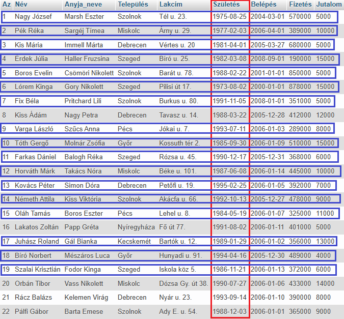
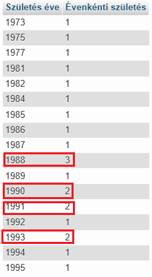
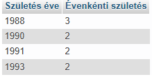
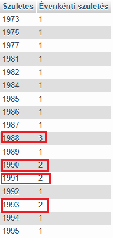
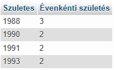

Egy alias az AS operátorral jön létre, és gyakran használják az oszlopnevek olvashatóbbá tételére.
Egy alias csak az adott lekérdezés időtartama alatt létezik.
Ha több szó az alias, de `` jelek (backtick operátor) közé tesszük, akkor a lekérdezés későbbi részében ezzel hivatkozhatunk rá.
Ha az alias egy szó, akkor írható "" nélkül is, és igaz ré a fenti megjegyzés.
SELECT
YEAR(Születés)
AS "Születés éve",
COUNT(YEAR(Születés))
AS "Évenkénti születés"
FROM dolgozók
GROUP BY
YEAR(Születés)
HAVING
COUNT(YEAR(Születés))
> 1;



Látható, hogy az eredménytábla a kiválasztott mezőkből áll. Nincs közöttük ismétlődés!
SELECT
YEAR(Születés)
AS Szuletes,
COUNT(YEAR(Születés))
AS `Évenkénti születés`
FROM dolgozók
GROUP BY Szuletes
HAVING `Évenkénti születés` >
1;


Látható, hogy az eredménytábla a kiválasztott mezőkből áll. Nincs közöttük ismétlődés!